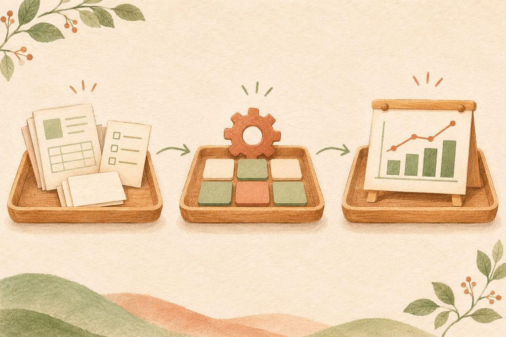
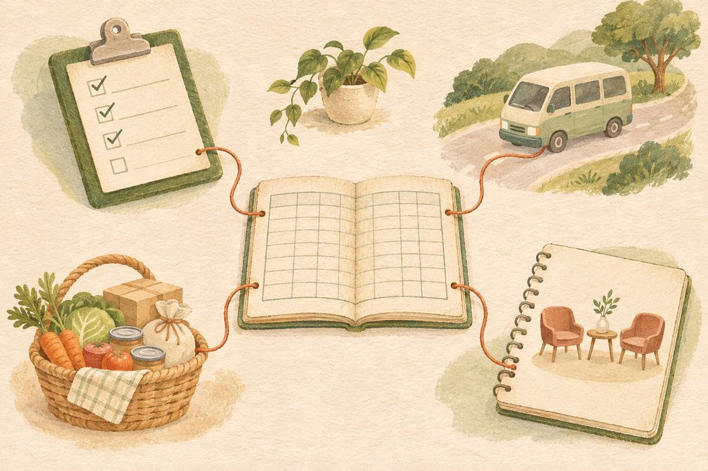

01
정형 데이터
날짜·코드·횟수처럼 정해진 항목과 형식에 맞춰 저장합니다. 행과 열이 일정해 계산과 조건 검색에 알맞습니다.
예 · 엑셀·구글 시트의 출석 표데이터란 무엇인가
정형·반정형·비정형, 그리고 파일에서 데이터로.
익숙한 기록을 다시 쓰는 일에서 벗어나,
쌓인 기록이 일을 돕게 만드는 방법을 살펴봅니다.
중요한 것은 저장한 문서의 수보다,
그 안의 값을 다시 꺼내 쓸 수 있는가입니다.
한글 문서(HWP)를 작성하고 폴더에 차곡차곡 넣는 일은 파일 관리입니다. 익숙한 문서 양식을 그대로 보관하고, 필요한 프로그램이 있는 컴퓨터에서 열어 볼 수 있습니다. 하지만 문서가 늘수록 파일 용량과 정리 부담이 커지고, 여러 문서에서 날짜·횟수·수량 같은 값만 모으기가 어려워집니다.
문서 안의 내용도 데이터입니다. 다만 한 줄에 하나의 기록, 한 열에 하나의 항목으로 정리하면 컴퓨터가 비교하고 계산하기 쉬운 데이터가 됩니다. 같은 형식의 표에 쌓아 두면 함수로 계산하고, 자동화로 연결하고, 현황을 한눈에 보는 대시보드로 만들 수 있습니다. 스마트워크는 이처럼 파일 중심의 보관에서 데이터 중심의 활용으로 나아갑니다.
월별 출석 문서마다 들어가 참석 인원을 확인합니다. 연간 실적이 필요하면 파일을 하나씩 열고 값을 다시 모읍니다.
“표 있는 워드프로세서 쓰듯 엑셀을 쓰는 사람들.”강의에서 · 표의 모양보다 데이터의 구조를 살펴보자는 뜻입니다.
표가 있다고 모두 계산하기 좋은 것은 아닙니다. 제목과 장식, 병합한 칸, 중간 합계가 뒤섞인 엑셀은 보기에는 편해도 다시 계산할 때 손이 많이 갑니다. 꾸미는 일과 쌓는 일을 구분하는 것이 첫걸음입니다.
데이터는 구조가 얼마나 정해져 있는지에 따라 정형·반정형·비정형으로 나눕니다. 무엇이 더 좋은가의 문제가 아니라, 어떤 방식으로 읽고 다룰 수 있는가의 차이입니다.
날짜·코드·횟수처럼 정해진 항목과 형식에 맞춰 저장합니다. 행과 열이 일정해 계산과 조건 검색에 알맞습니다.
예 · 엑셀·구글 시트의 출석 표일정한 표 모양은 아니지만, 태그 같은 표지와 계층 구조로 내용의 관계를 표현합니다. 프로그램이 그 구조를 해석합니다.
예 · HTML·XML 형식의 내용고정된 행·열 구조로 정리되지 않은 내용입니다. 사진·영상·자유롭게 쓴 문서가 대표적이며, 분석 도구로 정보를 추출할 수 있습니다.
예 · 활동 사진·상담 서술·녹화 영상디지털 사진은 작은 점인 픽셀로 이루어져 있고, 색은 RGB(빨강·초록·파랑) 같은 숫자 값으로 표현할 수 있습니다. 컴퓨터는 이 값에서 특징을 찾아 사진을 분류합니다.
구글 포토의 얼굴 그룹도 이런 분석의 예입니다. 지원되는 환경에서 비슷한 얼굴을 묶어 사진을 찾도록 돕습니다. 기능 제공 여부는 지역·계정 유형·설정에 따라 다릅니다.
공식 도움말 · 얼굴 그룹 설정 및 관리 ↗한 장에서 입력도 하고 계산도 하고 보고서까지 만들면, 표를 고치는 순간 수식이 깨지기 쉽습니다. 한 스프레드시트 파일 안에서도 역할별로 시트 탭을 세 겹으로 나눌 수 있습니다. 쌓는 곳과 보는 곳을 나누는 것만으로도 많은 혼란이 줄어듭니다.

현장에서 발생한 일을 같은 열 순서로 한 줄씩 추가합니다. 예: 날짜, 이용자 코드, 활동, 참석 횟수. 원본 사이에 보고용 합계나 장식용 빈 줄을 넣지 않습니다.
흐름은 ‘입력 → 가공 → 조회’입니다. 결과가 이상하면 원본 입력과 가공 과정을 거슬러 확인합니다. 결과 숫자만 직접 덮어쓰지 않습니다.
셀을 합치고 굵은 선으로 달력을 만든 다음, 다음 달마다 시트를 복사하고 지우고 다시 입력하고 계신가요? 그런 표는 워드프로세서의 문서 양식처럼 쓰는 방식입니다. 쌓는 시트에서는 1월~12월, 1일~31일, 이용자별로 탭을 나누지 않습니다. 같은 종류의 업무 기록을 한 장에 이어 붙이고, 날짜와 이용자 코드를 별도의 열에 넣습니다.
모든 줄에 날짜와 분류값을 각각 넣습니다. 위 칸과 같더라도 비워 두지 않습니다.
기록 사이의 ‘합계’도 데이터로 계산될 수 있습니다. 합계는 가공·조회 시트로 옮깁니다.
날짜 열에는 날짜, 수량 열에는 숫자를 넣습니다. ‘3개’ 대신 수량 3, 단위 ‘개’로 나눕니다.
한 번의 출석인지, 한 품목의 입고인지 정해 둡니다. 서로 다른 단위의 기록을 섞지 않습니다.
실무에서는 다음과 같이 ‘한 줄이 무엇인가’를 먼저 정해 보세요. 업무마다 별도의 원본 표를 두되, 같은 업무 안에서 월별·사람별로 잘게 나누지 않는다는 뜻입니다.
| 구조 | 한 줄의 뜻 | 열의 예 |
|---|---|---|
| 활동 기록형 | 한 번의 참여·운행 | 날짜 · 대상 코드 · 활동 · 횟수 |
| 물품 내역형 | 한 품목의 입고·출고 | 날짜 · 품목 · 구분 · 수량 · 단위 |
| 측정 기록형 | 한 시점의 한 항목 측정 | 날짜 · 대상 코드 · 항목 · 측정값 |
“엑셀은 살과 뼈가 분리되어 있어요.
데이터랑 양식이 분리되어 있어요.”강의에서 · 양식은 그대로 두고, 조건에 맞는 데이터만 바꿔 보여 줍니다.
보는 시트에서는 날짜나 사람을 고르면 됩니다. FILTER 같은 함수가 원본에서 조건에 맞는 줄만 가져오고, 집계 함수가 실적을 계산하도록 구성할 수 있습니다. 데이터를 새로 옮겨 붙이는 대신 같은 기록을 여러 조건으로 바라보는 것입니다.
월과 이용자 코드를 바꿔 보세요. 아래 숫자와 목록이 함께 바뀝니다. 이 화면은 실제 구글 시트와 연결되어 있지 않습니다.
| 날짜 | 이용자 코드 | 활동 |
|---|
참여 기록 8건과 이용자 3명은 다른 수치입니다. 같은 이용자가 여러 번 참여할 수 있으므로, 실적에 필요한 단위를 먼저 정하세요.
빅데이터는 멀리 있는 이야기처럼 들릴 수 있습니다. 하지만 이용자 출석, 차량 운행, 후원 물품, 상담 기록은 이미 현장에서 매일 만들고 있는 스몰 데이터입니다. 새로운 자료를 잔뜩 수집하기보다, 지금 파일 속에 흩어진 기록을 재사용할 수 있게 만드는 데서 시작하세요.

날짜 · 이용자 코드 · 활동 · 참석 여부를 기록합니다. 쌓인 기록으로 월별 참여 횟수와 이용자별 참여 흐름을 확인할 수 있습니다.
처음부터 거대한 분석 체계를 만들 필요는 없습니다. ‘어떤 질문에 답하고 싶은가’와 ‘한 줄을 어떻게 기록할 것인가’를 먼저 정하세요. 기록의 양이 늘어나는 것보다, 서로 다른 형식이 섞여 계산할 수 없게 되는 것이 더 먼저 살펴볼 문제입니다. 실제 도구의 성능이나 한계가 드러나면 그때 저장·처리 방식을 점검합니다.
자동화의 시작은 결과 보고서를 꾸미는 것이 아니라, 현장의 기록이 원본 표까지 도착하는 길을 만드는 것입니다. 사람이 매번 복사·붙여넣기(Ctrl+C / Ctrl+V)로 옮기기 시작하면 반복 행정이 생깁니다. 강의에서 살펴본 다섯 가지 입구는 모두 스프레드시트로 연결할 수 있습니다. 다만 도구에 맞는 연결 설정이 필요합니다.
현장에서 문항에 답하면, 연결한 스프레드시트에 응답이 기록되도록 설정할 수 있습니다.
접수·신청 화면의 입력값을 표로 보내도록 수집 경로와 저장 연결을 구성합니다.
현장에서 바로 입력합니다. 사용하는 앱에 맞는 내보내기나 연동 기능을 확인합니다.
입력할 설문지나 웹페이지로 빠르게 이동하는 입구입니다. 그 화면에서 입력을 받아야 기록이 생깁니다.
온도·횟수 같은 측정값을 수집합니다. 장치와 저장 도구 사이에 전송·연동 구성이 필요합니다.
실제 계정은 건드리지 않습니다. 다음 단계를 눌러 메뉴 흐름을 익혀 보세요.
응답을 받을 구글 설문지의 편집 화면에서 상단 ‘응답’을 선택합니다. 응답이 있으면 ‘요약’ 화면도 확인할 수 있습니다.
결과를 보고할 때가 되어서야 지난 기록을 몰아 찾으면, 기억에 기대어 빈칸을 채우고 같은 실적을 여러 번 입력하게 됩니다. 과정을 제때 기록하면 결과를 만드는 근거가 남습니다. ‘실적 숫자를 입력하는 일’에서 ‘기록을 바탕으로 컴퓨터가 계산하게 하는 일’로 업무의 중심이 옮겨 갑니다.
활동이 끝난 뒤 종이에 적고 사무실에서 다시 입력하는 대신, 현장에서 설문지나 앱에 필요한 사실을 한 번 남깁니다. 그 기록이 원본 표로 모이도록 입구를 설계합니다.
접수 사실이나 확인할 일을 표에서 찾아 매번 옮겨 쓰는 대신, 기록의 상태를 기준으로 알림이 이어지는 흐름을 구성할 수 있습니다. 발송 조건·받는 사람·중복 여부를 먼저 정하고 시험합니다.
다섯 번 반복할 일을 더 빨리 하는 데는 한계가 있습니다. 같은 내용을 여러 곳에 쓰는 구조가 그대로라면 담당자의 노동만 늘어납니다. 반복을 줄이려면 도구를 익히는 것과 함께 기록·계산·전달의 흐름을 바꾸어야 합니다.
자동화 시대에도 사회복지사의 역할은 중요합니다. 무엇을 기록해야 하는지 판단하고, 숫자가 가리키는 현장을 해석하며, 이용자의 변화를 살피고 관계를 이어 가는 일은 사람이 맡습니다. 절약한 행정 시간을 더 깊은 사례관리와 돌봄에 쓰는 것이 변화의 목적입니다.
별도의 현장 질문 원문은 제공되지 않아, 강의 내용을 바탕으로 복습할 때 생길 만한 질문을 정리했습니다. 질문을 누르면 답이 펼쳐집니다.
아닙니다. 보고·결재·보존을 위한 문서와, 계산·검색을 위한 원본 데이터는 역할이 다릅니다. 기존 문서는 필요한 기준에 따라 보관하고, 반복해서 꺼내 쓰는 날짜·횟수·수량부터 일정한 열로 정리해 보세요.
한 줄의 뜻과 열의 형식이 일정한지 확인해야 합니다. 병합 셀과 중간 소계가 있고 같은 열에 날짜·문장·숫자가 섞여 있다면 계산하기 어렵습니다. 표의 모양보다 구조가 중요합니다.
같은 종류의 원본 기록을 월별·일별·이용자별로 쪼개지 말라는 뜻입니다. 출석과 물품처럼 한 줄의 의미와 항목이 다른 업무는 각각의 원본 표로 관리하세요. 원본·가공·조회 시트도 역할에 따라 구분합니다.
보는 시트의 양식은 유지할 수 있습니다. 원본에는 이용자 코드를 열로 쌓아 두고, 보는 시트에서 코드를 고르면 FILTER 같은 함수가 해당 기록만 가져오게 구성합니다. 매달 양식을 복사하고 다시 입력할 필요가 줄어듭니다.
사진도 픽셀 값으로 표현되고, 문장에서도 분석 도구를 이용해 정보를 추출할 수 있습니다. 다만 정형 표처럼 곧바로 더하거나 세기 어려울 뿐입니다. 원본을 보존하면서 필요한 항목을 추출하고, 해석이 정확한지 사람이 확인합니다.
QR코드는 입력 화면으로 이동하게 하는 입구입니다. 연결된 설문지나 앱에서 입력을 받고, 그 응답이 시트로 저장되도록 설정해야 합니다. 테스트 입력으로 끝까지 이어지는지 확인하세요.
매일 기록하는 작은 업무 하나면 충분합니다. 먼저 열 이름과 한 줄의 기준을 정하고 가상 기록 몇 줄을 입력해 보세요. 그다음 쌓는 시트와 보는 시트를 나눕니다. 필요한 조회 질문이 정해지면 그 질문에 맞는 함수부터 익힐 수 있습니다.
입력 누락·중복과 잘못된 분류는 자동으로 없어지지 않습니다. 원본과 결과를 표본으로 대조하고, 현장의 변화가 숫자에 제대로 담겼는지 살펴야 합니다. 자동화는 판단을 돕는 도구이며, 해석과 사례관리는 사람의 역할입니다.
모두 고른 뒤 ‘정답과 해설 보기’를 누르세요. 틀린 문제가 있어도 다시 선택해 보실 수 있습니다.
완벽한 시스템보다 작은 첫 표가 중요합니다. 오늘 만들 기록 하나를 고르고, 아래 순서대로 확인해 보세요.
체크한 내용은 이 브라우저에 저장됩니다.
오늘의 올바른 한 줄이,
내일의 행정을 가볍게 만듭니다.